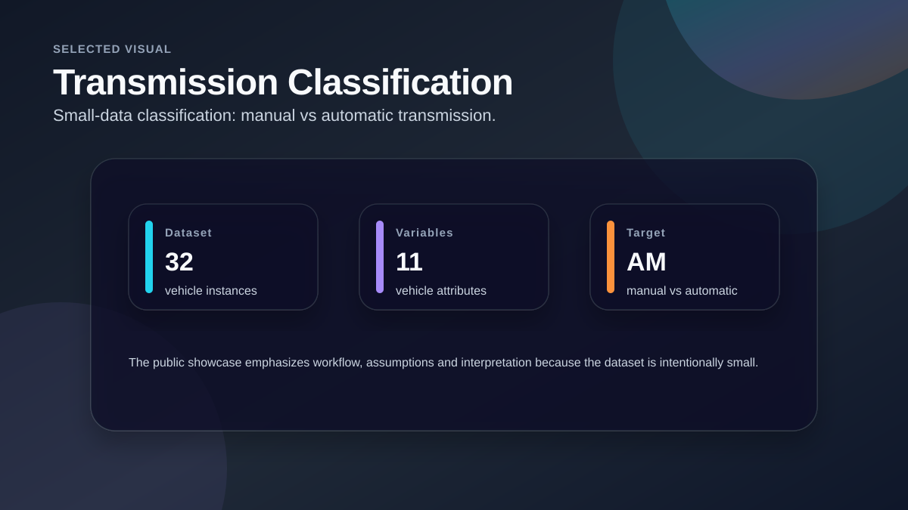
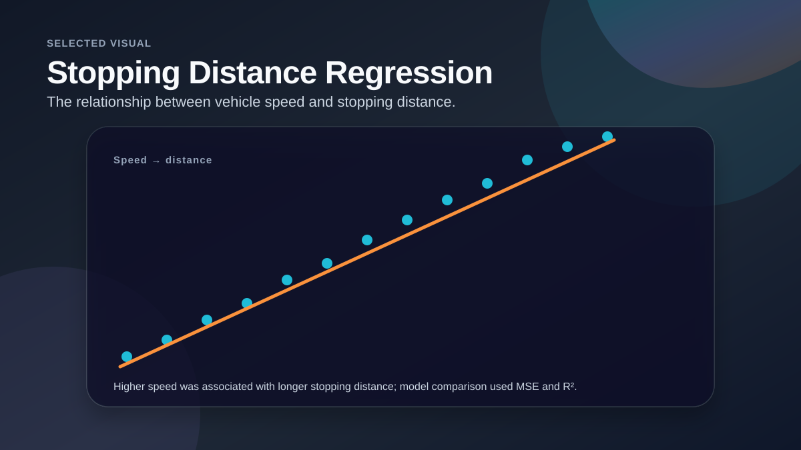
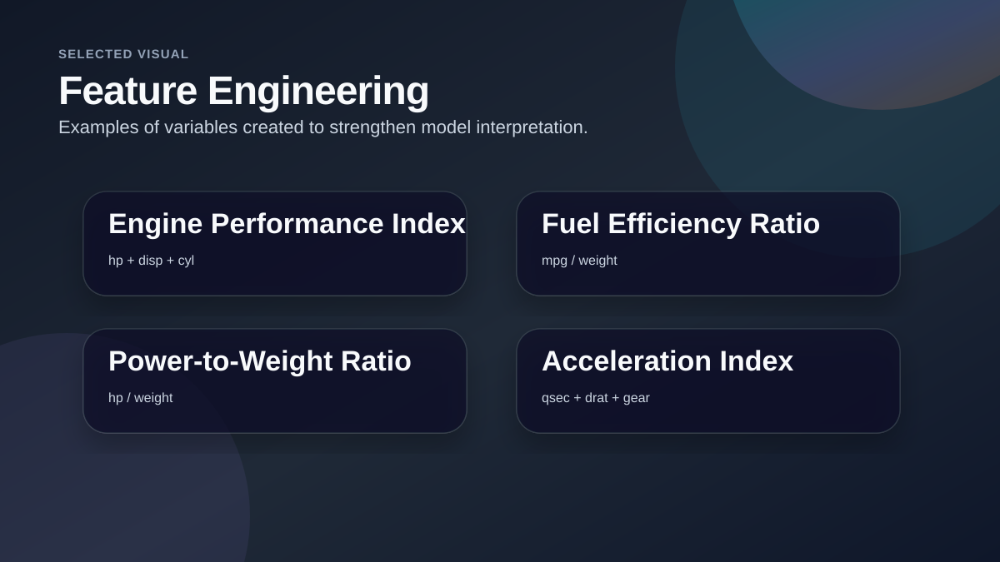

Vehicle Data Predictive Analysis
A technical analytics case study applying regression and classification methods to vehicle datasets, with emphasis on interpretation and model comparison.

Project Snapshot
Business Question
The goal was to apply a structured analytical workflow to small vehicle datasets and explain what variables were useful for prediction.
My Analytical Approach
- Explored dataset structure and variable relationships.
- Checked missing values, duplicates and distributions.
- Created engineered variables to improve interpretation.
- Built and compared predictive models for transmission classification and stopping distance regression.
- Presented findings in a concise technical report.
Selected Visuals from the Analysis

Transmission Classification
Summarizes the small-data classification task for manual vs automatic transmission.

Stopping Distance Regression
Visualizes the positive relationship between vehicle speed and stopping distance.

Feature Engineering
Highlights engineered variables created to support model interpretation.
Key Findings
Small dataset constraint
The transmission dataset was small, so interpretation and responsible evaluation were important.
Clear relationship
The stopping-distance task showed a strong positive relationship between speed and distance.
Model comparison
The project compared multiple models and evaluated them with metrics such as MSE and R².
Recommendations / Outcome
Prioritize interpretability
For small datasets, simple models and clear explanations are often more useful than overly complex models.
Use model comparison
Compare baseline, linear, polynomial and tree-based models before choosing a final approach.
Explain assumptions
State dataset limitations and assumptions clearly in the technical report.